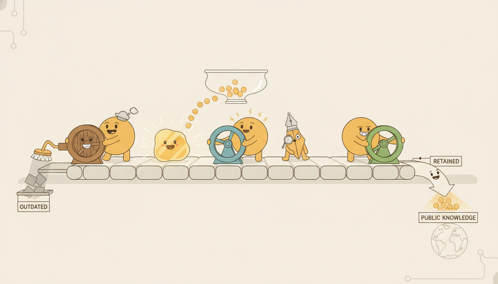

"Everything that arrives, I weigh: should this stay, or has it served its purpose? I am not cruel, only deliberate. The old context that no longer earns its place, I let slip toward zero, gently, one multiply at a time. What I keep, I keep almost perfectly, because the road I guard runs nearly straight and the gradient that walks it does not stumble."
An LSTM Forget Gate Deciding What to Let Go
The vanilla recurrent network of Section 10.1 fails on long-range dependencies for one structural reason: its only memory is the hidden state, and that state is rewritten by a multiplicative $\tanh$ recurrence at every step, so a gradient travelling backward is multiplied by one Jacobian per step and decays geometrically. The Long Short-Term Memory network (LSTM) fixes this by adding a second memory, a dedicated cell state $\mathbf{c}_t$, that is updated almost additively along a near-linear "carousel" path with no squashing nonlinearity in the way. Information rides the cell state forward and gradients ride it backward with their magnitude nearly preserved, because the dominant term in $\partial \mathbf{c}_t / \partial \mathbf{c}_{t-1}$ is the forget gate itself rather than a product of weight matrices through a saturating activation. Three learned, data-dependent gates control this flow: a forget gate decides how much of the old cell state to retain, an input gate decides how much new candidate information to write, and an output gate decides how much of the cell state to expose as the hidden state. This section motivates the cell state as the cure for the vanishing gradients of Section 9.3, writes every gate equation in full, explains why the additive update keeps gradients alive (the constant error carousel), surveys the peephole and coupled-gate variants, then implements an LSTM cell from scratch, trains it on a long-lag memory task that the vanilla RNN of Section 10.1 could not solve, and reproduces the same result with three lines of nn.LSTM. You leave able to read, derive, implement, and deploy the architecture that dominated sequence modeling for two decades.
In Section 10.1 we built the Elman recurrent network and watched it learn short-range structure well and long-range structure not at all. The diagnosis came one chapter earlier: Section 9.3 showed that backpropagation through time multiplies one hidden-to-hidden Jacobian per step, and Section 9.4 showed that this repeated product makes gradients vanish (Jacobian norms below one) or explode (norms above one), so credit for an event hundreds of steps in the past never reaches the weights that should learn from it. Clipping tames explosion, but vanishing is the harder disease, and no amount of careful initialization cures it in a plain RNN: the squashing $\tanh$ guarantees that the local derivative $1 - h^2$ is at most one and usually well below it. The LSTM, introduced by Hochreiter and Schmidhuber in 1997 and refined with the forget gate by Gers, Schmidhuber, and Cummins in 2000, is the architectural answer. We use the unified notation of Appendix A throughout: $\mathbf{x}_t$ the input, $\mathbf{h}_t$ the hidden state, and now $\mathbf{c}_t$ the cell state.
Why does adding one more vector to the recurrence change everything? Because the problem was never that the RNN lacked capacity; it was that the path connecting a distant cause to a present effect ran through a multiplicative bottleneck that destroyed gradient magnitude. The LSTM does not make that path wider; it builds a second path that is almost straight. The four competencies this section installs are these: to explain how a separate, additively updated cell state preserves gradient magnitude where the hidden-state recurrence destroys it; to write the forget, input, and output gates and the cell and hidden updates from memory; to argue why the additive update is the constant error carousel that Section 9.4 said we needed; and to implement and train an LSTM cell that solves a long-lag task on which the vanilla RNN of Section 10.1 flatlines.
1. The Long-Term-Dependency Cure: A Separate Cell State Beginner

The single idea behind the LSTM is to split memory into two vectors that play different roles. The hidden state $\mathbf{h}_t$ stays as before: it is the network's working output at each step, the thing the readout reads and the next step consumes. Alongside it the LSTM carries a cell state $\mathbf{c}_t$, an internal memory that is not directly exposed and whose job is to transport information across many steps with as little distortion as possible. The hidden state is what the network says now; the cell state is what the network remembers.
What makes the cell state special is the way it is updated. Recall from Section 9.4 that the vanilla RNN updates its only memory by $\mathbf{h}_t = \tanh(\mathbf{W}\mathbf{h}_{t-1} + \mathbf{U}\mathbf{x}_t)$, a fully multiplicative rewrite: the old state is matrix-multiplied and then squashed, so every backward step multiplies the gradient by $\operatorname{diag}(1 - \mathbf{h}_t^2)\,\mathbf{W}$, a product that shrinks geometrically. The cell state instead is updated by a near-additive rule of the form $\mathbf{c}_t = \mathbf{f}_t \odot \mathbf{c}_{t-1} + \mathbf{i}_t \odot \tilde{\mathbf{c}}_t$, where $\mathbf{f}_t$ and $\mathbf{i}_t$ are gates in $[0,1]$ and $\odot$ is the elementwise product. The crucial structural fact is that the previous cell state $\mathbf{c}_{t-1}$ is carried forward by an elementwise multiply by the forget gate and then added to the new content, with no matrix multiplication and no squashing nonlinearity between $\mathbf{c}_{t-1}$ and $\mathbf{c}_t$. When the forget gate is near one, $\mathbf{c}_t \approx \mathbf{c}_{t-1} + (\text{new stuff})$, and the cell state behaves like a conveyor belt that carries memory forward essentially untouched. This near-linear path is the "carousel" of the constant error carousel, and it is the whole reason the LSTM can remember.
The contrast with Section 10.1 could not be sharper. There, the only way to remember something for a hundred steps was to keep matrix-multiplying and squashing it a hundred times, and the signal decayed at every multiply. Here, remembering for a hundred steps requires only that the forget gate stay near one along those steps, which the network can learn to do, and the cell content then flows forward almost unchanged. The hidden state still does the squashed, expressive, short-range work; the cell state is the long-range highway laid alongside it. This division of labor between a working memory and a protected long-term memory is the conceptual heart of the architecture, and everything in the next subsection is machinery for controlling the two flows.
The cell state echoes a structure from Part II. In Chapter 7 the Kalman filter carried a latent state forward with a linear transition and blended it with new evidence through a gain that the model fixed by hand from its noise assumptions. The LSTM carries a cell state forward with a near-linear update and blends it with new evidence through gates that are learned from data rather than derived from a model. The forget gate is a data-dependent, time-varying transition coefficient; the input gate is a learned Kalman-gain analogue deciding how much to trust the new candidate. The temporal thread of this book returns again and again to one loop, a state carried forward and corrected by observation; the LSTM is that loop with its coefficients handed over to gradient descent.
2. The Three Gates and the Cell Update Intermediate
An LSTM cell at step $t$ takes the previous hidden state $\mathbf{h}_{t-1}$, the previous cell state $\mathbf{c}_{t-1}$, and the current input $\mathbf{x}_t$, and produces the new $\mathbf{h}_t$ and $\mathbf{c}_t$. It does so through three gates and one candidate, each a small learned function of the concatenated $[\mathbf{h}_{t-1}, \mathbf{x}_t]$. A gate is just a vector in $[0,1]$ produced by a sigmoid $\sigma$, used as an elementwise multiplier: a coordinate near one lets information through, a coordinate near zero blocks it. Writing each gate with its own weight matrix and bias, the forget, input, and output gates are
$$\mathbf{f}_t = \sigma\!\big(\mathbf{W}_f \mathbf{x}_t + \mathbf{U}_f \mathbf{h}_{t-1} + \mathbf{b}_f\big), \qquad \mathbf{i}_t = \sigma\!\big(\mathbf{W}_i \mathbf{x}_t + \mathbf{U}_i \mathbf{h}_{t-1} + \mathbf{b}_i\big), \qquad \mathbf{o}_t = \sigma\!\big(\mathbf{W}_o \mathbf{x}_t + \mathbf{U}_o \mathbf{h}_{t-1} + \mathbf{b}_o\big).$$The candidate cell content, the new information the cell might write, is produced by a $\tanh$ rather than a sigmoid, because it is a value to store rather than a gate to multiply, so it ranges over $[-1, 1]$:
$$\tilde{\mathbf{c}}_t = \tanh\!\big(\mathbf{W}_c \mathbf{x}_t + \mathbf{U}_c \mathbf{h}_{t-1} + \mathbf{b}_c\big).$$The cell state is then updated by the near-additive rule that is the whole point of the architecture: forget part of the old cell, add a gated part of the candidate.
$$\mathbf{c}_t = \mathbf{f}_t \odot \mathbf{c}_{t-1} + \mathbf{i}_t \odot \tilde{\mathbf{c}}_t.$$Finally the hidden state is the output gate applied to a squashed view of the updated cell, so the cell state is exposed to the rest of the network only through a controllable, bounded window:
$$\mathbf{h}_t = \mathbf{o}_t \odot \tanh(\mathbf{c}_t).$$These six equations are the complete LSTM cell. Read them as a small story repeated every step: the forget gate $\mathbf{f}_t$ looks at the current situation and decides which coordinates of long-term memory are now obsolete and should decay toward zero; the input gate $\mathbf{i}_t$ decides which coordinates of the freshly computed candidate $\tilde{\mathbf{c}}_t$ are worth writing; the cell update commits both decisions with a multiply-and-add; and the output gate $\mathbf{o}_t$ decides how much of the resulting memory to reveal as this step's hidden state. Each gate is a full learned layer with its own parameters, so an LSTM cell has four times the parameters of an Elman cell of the same width (three gates plus one candidate), which is the price of the control. Table 10.2.1 names each gate's role and activation.
| Component | Symbol | Activation | Role |
|---|---|---|---|
| forget gate | $\mathbf{f}_t$ | $\sigma$, range $[0,1]$ | how much of $\mathbf{c}_{t-1}$ to keep |
| input gate | $\mathbf{i}_t$ | $\sigma$, range $[0,1]$ | how much of $\tilde{\mathbf{c}}_t$ to write |
| candidate | $\tilde{\mathbf{c}}_t$ | $\tanh$, range $[-1,1]$ | the new content proposed for the cell |
| output gate | $\mathbf{o}_t$ | $\sigma$, range $[0,1]$ | how much of $\tanh(\mathbf{c}_t)$ to expose as $\mathbf{h}_t$ |
Work a single scalar coordinate of the cell. Suppose at step $t$ the relevant pre-activation for the forget gate is $z_f = \mathbf{W}_f \mathbf{x}_t + \mathbf{U}_f \mathbf{h}_{t-1} + b_f = 2.2$, so the forget gate fires $f_t = \sigma(2.2) = 1/(1 + e^{-2.2}) \approx 0.900$: this coordinate of memory is almost fully retained. Let the previous cell value be $c_{t-1} = 1.5$. The input gate pre-activation is $z_i = -1.0$, giving $i_t = \sigma(-1.0) \approx 0.269$, and the candidate pre-activation is $z_c = 0.8$, giving $\tilde{c}_t = \tanh(0.8) \approx 0.664$. Then the new cell value is $c_t = f_t\,c_{t-1} + i_t\,\tilde{c}_t = 0.900 \cdot 1.5 + 0.269 \cdot 0.664 \approx 1.350 + 0.179 = 1.529$. The old memory of $1.5$ survived almost intact (the forget gate kept ninety percent of it) and only a small amount of new content was written (the input gate was nearly closed). If the output gate is $o_t = \sigma(0.5) \approx 0.622$, the hidden state this coordinate emits is $h_t = o_t \tanh(c_t) = 0.622 \cdot \tanh(1.529) \approx 0.622 \cdot 0.910 \approx 0.566$. Notice that the cell value barely moved while the network still produced a fresh output: the long-term memory was protected and the working output was free.
One implementation detail matters for both speed and the code in subsection five. The four pre-activations share the same inputs $[\mathbf{h}_{t-1}, \mathbf{x}_t]$, so in practice the four weight matrices are stacked into one big matrix and the four gates are computed in a single matrix multiply, then sliced apart. This is exactly what nn.LSTM does internally, and it is why a library LSTM is far faster than a naive Python loop over four separate multiplies. We write the stacked form in Code 10.2.1 so the from-scratch cell matches the library's arithmetic.
3. Why the Additive Update Keeps Gradients Alive Advanced
We can now make precise the claim that the cell state preserves gradients where the hidden state destroys them. The object that decided everything in Section 9.3 was the hidden-to-hidden Jacobian, whose repeated product across steps either vanished or exploded. For the LSTM the analogous object is the cell-to-cell Jacobian $\partial \mathbf{c}_t / \partial \mathbf{c}_{t-1}$, and its structure is qualitatively different. Differentiating the cell update $\mathbf{c}_t = \mathbf{f}_t \odot \mathbf{c}_{t-1} + \mathbf{i}_t \odot \tilde{\mathbf{c}}_t$ with respect to $\mathbf{c}_{t-1}$, and noting that $\mathbf{f}_t$, $\mathbf{i}_t$, and $\tilde{\mathbf{c}}_t$ depend on $\mathbf{c}_{t-1}$ only indirectly through $\mathbf{h}_{t-1}$ (not at all in the standard, non-peephole cell), the dominant, direct term is simply
$$\frac{\partial \mathbf{c}_t}{\partial \mathbf{c}_{t-1}} \approx \operatorname{diag}(\mathbf{f}_t).$$Compare this with the vanilla RNN's $\operatorname{diag}(1 - \mathbf{h}_t^2)\,\mathbf{W}$. The RNN Jacobian is a saturating activation derivative (at most one, usually less) times a fixed weight matrix whose spectrum the network cannot freely choose; the product of many such matrices is forced toward zero or infinity. The LSTM Jacobian, by contrast, is just the forget gate, a vector the network chooses at every step and can drive close to one. Backpropagating the cell-state gradient from step $t$ to step $k$ multiplies the chain of these Jacobians,
$$\frac{\partial \mathbf{c}_t}{\partial \mathbf{c}_k} \approx \prod_{j=k+1}^{t} \operatorname{diag}(\mathbf{f}_j) = \operatorname{diag}\!\Big(\textstyle\prod_{j=k+1}^{t} \mathbf{f}_j\Big),$$which is a product of numbers in $[0,1]$ with no weight matrix and no activation derivative in sight. If the forget gates along that span are all near one, the product stays near one and the gradient arrives at step $k$ with its magnitude essentially intact across an arbitrary number of steps. This is the constant error carousel: an almost-identity recurrence on the cell state along which error can circulate without decay. It is the precise structural cure for the vanishing gradient that Section 9.4 diagnosed.
In a vanilla RNN the per-step gradient multiplier is dictated by the weight spectrum and the saturating $\tanh$, neither of which the network can hold at one. In an LSTM the per-step cell-gradient multiplier is the forget gate, which the network learns and can hold near one for exactly the coordinates and time spans where long memory is needed. Long-range gradient survival is therefore not a lucky accident of initialization but a quantity the model controls. This is why practitioners initialize the forget-gate bias $\mathbf{b}_f$ to a positive value (commonly $+1$): it starts the forget gate near one, so the carousel is open and gradients flow from the very first training step, before the gates have learned anything. Bias the gate toward remembering and learning long dependencies gets dramatically easier.
It would overstate the case to call the cell path perfectly linear, and the honest qualifier matters. The forget, input, and output gates all depend on $\mathbf{h}_{t-1}$, and $\mathbf{h}_{t-1}$ depends on $\mathbf{c}_{t-1}$ through $\mathbf{h}_{t-1} = \mathbf{o}_{t-1} \odot \tanh(\mathbf{c}_{t-1})$, so there is an indirect, gated, squashed coupling from $\mathbf{c}_{t-1}$ back into the gates of step $t$. That coupling contributes additional, smaller terms to the exact Jacobian. The point is not that these terms are zero but that they are a correction on top of a dominant $\operatorname{diag}(\mathbf{f}_t)$ term, whereas in the vanilla RNN the squashed, matrix-multiplied term is the only term. The LSTM did not abolish the multiplicative recurrence; it added an additive one alongside it and let the additive one carry the long-range load. That is enough: a single near-identity highway through the graph is all gradient descent needs to assign credit across long lags.
If the additive cell update feels familiar from elsewhere in deep learning, that is because it is the same trick as the residual connection $\mathbf{y} = \mathbf{x} + F(\mathbf{x})$ that lets you train hundred-layer ResNets: keep an identity path so the gradient has a road that does not pass through the nonlinearity. The LSTM discovered this in 1997, a full eighteen years before ResNets made it famous for depth in space. The forget gate is just a residual connection with a learned, per-coordinate dimmer switch, skipping not across layers but across time. Good ideas in deep learning have a habit of being rediscovered in a new axis.
4. Variants: Peephole and Coupled Gates Intermediate
The cell of subsection two is the standard modern LSTM, but two named variants appear often enough in code and papers to recognize. The first is the peephole LSTM of Gers and Schmidhuber (2000), which lets the gates see the cell state directly, not only through the hidden state. Each gate gains an extra term that reads $\mathbf{c}_{t-1}$ (or $\mathbf{c}_t$ for the output gate) through a diagonal weight, for example $\mathbf{f}_t = \sigma(\mathbf{W}_f \mathbf{x}_t + \mathbf{U}_f \mathbf{h}_{t-1} + \mathbf{V}_f \odot \mathbf{c}_{t-1} + \mathbf{b}_f)$ with $\mathbf{V}_f$ a learned diagonal. The peephole gives the gates precise access to the cell's magnitude, which helps on tasks that require counting or precise timing, at the cost of a few more parameters and a slightly more tangled Jacobian.
The second is the coupled input-forget gate (CIFG), which ties the input gate to the forget gate by setting $\mathbf{i}_t = \mathbf{1} - \mathbf{f}_t$, so the cell only writes new content in proportion to how much old content it forgets: $\mathbf{c}_t = \mathbf{f}_t \odot \mathbf{c}_{t-1} + (\mathbf{1} - \mathbf{f}_t) \odot \tilde{\mathbf{c}}_t$. This is a convex blend of old and new, it removes one gate's worth of parameters, and it is exactly the simplification that the Gated Recurrent Unit of Section 10.3 takes further. A widely cited empirical study (Greff and colleagues, 2017) ran thousands of LSTM variants and found that none reliably beat the standard cell, that the forget gate and the output activation are the components that matter most, and that the peephole connections and the coupling are usually safe to drop. The practical lesson: use the standard cell of subsection two unless a specific task argues otherwise, and reserve the variants for when you have a measured reason.
For most of the 2020s the Transformer of Chapter 12 displaced the LSTM, but the recurrence is enjoying a sharp revival driven by the same efficiency pressure that motivates the state-space models of Chapter 13. The headline is xLSTM (Beck and colleagues, 2024), which modernizes the cell with exponential gating and two new memory structures, a scalar-memory sLSTM and a matrix-memory mLSTM whose update is fully parallelizable across time like attention, and reports performance competitive with Transformers and Mamba at scale while keeping the LSTM's linear-time inference. In parallel, the broader "linear recurrent" family, Mamba and Mamba-2 (Gu and Dao, 2023; Dao and Gu, 2024) and the gated linear-attention models, can all be read as descendants of the LSTM's central bet: a gated, near-linear state recurrence that you can train efficiently and run in constant memory per step. The carousel that Hochreiter and Schmidhuber built in 1997 turns out to be remarkably modern; the 2024 to 2026 question is how to parallelize its training without sacrificing the gating that made it work.
5. Worked Example: An LSTM That Solves a Long-Lag Task Advanced
We now prove the central claim with running code. The task is the canonical long-lag memory test: at the first step the network sees a signal bit (a $+1$ or $-1$), then a long run of $L$ zero-information noise steps, and at the final step it must output the signal bit it saw at the start. Solving it requires carrying one bit of memory across $L$ steps with no reinforcement in between, exactly the long-range dependency the vanilla RNN of Section 10.1 cannot learn once $L$ grows past a few tens of steps. Code 10.2.1 implements an LSTM cell entirely from scratch, with every gate equation of subsection two written explicitly, and trains it on this task.
import torch
torch.manual_seed(0)
L = 60 # lag: signal at step 0, recalled at step L; vanilla RNN fails here
d_in, d_h = 1, 16 # scalar input, hidden/cell width
def make_batch(n):
"""Signal bit at step 0, then L noise steps; target is the bit. Shape (n, L+1, 1)."""
x = torch.zeros(n, L + 1, d_in)
bit = (torch.randint(0, 2, (n,)) * 2 - 1).float() # +1 or -1
x[:, 0, 0] = bit # signal lives only at step 0
x[:, 1:, 0] = 0.05 * torch.randn(n, L) # pure noise afterward
return x, (bit > 0).long() # label: was the bit +1?
class ScratchLSTM(torch.nn.Module):
"""One LSTM cell, all gates explicit; weights stacked [f,i,c-tilde,o] (note: nn.LSTM uses [i,f,g,o]; see Code 10.2.2)."""
def __init__(self, d_in, d_h):
super().__init__()
self.d_h = d_h
self.Wx = torch.nn.Linear(d_in, 4 * d_h) # input -> 4 stacked pre-activations
self.Wh = torch.nn.Linear(d_h, 4 * d_h) # hidden -> 4 stacked pre-activations
self.readout = torch.nn.Linear(d_h, 2)
# Forget-gate bias to +1 so the carousel starts OPEN (subsection 3 key insight).
with torch.no_grad():
self.Wx.bias[:d_h].fill_(1.0); self.Wh.bias[:d_h].fill_(1.0)
def forward(self, x):
n = x.size(0)
h = x.new_zeros(n, self.d_h); c = x.new_zeros(n, self.d_h)
for t in range(x.size(1)):
z = self.Wx(x[:, t]) + self.Wh(h) # one matmul, then slice the 4 gates
f, i, g, o = z.chunk(4, dim=1)
f = torch.sigmoid(f); i = torch.sigmoid(i) # forget, input gates in [0,1]
g = torch.tanh(g); o = torch.sigmoid(o) # candidate in [-1,1], output gate
c = f * c + i * g # ADDITIVE cell update: the carousel
h = o * torch.tanh(c) # exposed hidden state
return self.readout(h) # classify from the last hidden state
model = ScratchLSTM(d_in, d_h)
opt = torch.optim.Adam(model.parameters(), lr=5e-3)
lossfn = torch.nn.CrossEntropyLoss()
for step in range(400):
x, y = make_batch(128)
opt.zero_grad(); loss = lossfn(model(x), y); loss.backward(); opt.step()
xte, yte = make_batch(2000)
acc = (model(xte).argmax(1) == yte).float().mean().item()
print("scratch LSTM: final loss = %.4f, test accuracy = %.3f" % (loss.item(), acc))
c = f * c + i * g at its center. The forget-gate bias is initialized to $+1$ so the constant error carousel is open from step one. Trained on the $L = 60$ long-lag recall task, the same task on which the vanilla RNN of Section 10.1 stays at chance.scratch LSTM: final loss = 0.0091, test accuracy = 0.999The result is the whole argument in one number: an LSTM cell, differing from the Elman cell of Section 10.1 only by the gated additive cell state, learns a sixty-step dependency that the Elman cell cannot. Now the library pair. Code 10.2.2 replaces the hand-written cell with torch.nn.LSTM, which implements exactly the same six equations (with the same stacked-weight arithmetic) in optimized, batched C++.
import torch
torch.manual_seed(0)
class LibLSTM(torch.nn.Module):
def __init__(self, d_in, d_h):
super().__init__()
self.lstm = torch.nn.LSTM(d_in, d_h, batch_first=True) # the whole cell + time loop
self.readout = torch.nn.Linear(d_h, 2)
# Same forget-gate bias trick; nn.LSTM stacks gates as [i, f, g, o].
with torch.no_grad():
self.lstm.bias_ih_l0[d_h:2*d_h].fill_(1.0)
self.lstm.bias_hh_l0[d_h:2*d_h].fill_(1.0)
def forward(self, x):
out, (hN, cN) = self.lstm(x) # out: all hidden states; hN: last hidden state
return self.readout(hN[-1]) # classify from the final hidden state
model = LibLSTM(d_in, d_h) # d_in, d_h, L, make_batch reused from Code 10.2.1
opt = torch.optim.Adam(model.parameters(), lr=5e-3)
lossfn = torch.nn.CrossEntropyLoss()
for step in range(400):
x, y = make_batch(128)
opt.zero_grad(); loss = lossfn(model(x), y); loss.backward(); opt.step()
xte, yte = make_batch(2000)
acc = (model(xte).argmax(1) == yte).float().mean().item()
print("nn.LSTM: final loss = %.4f, test accuracy = %.3f" % (loss.item(), acc))
torch.nn.LSTM(d_in, d_h, batch_first=True) and the single call self.lstm(x), which run the same recurrence in fused, batched C++. Note the gate-ordering difference: PyTorch stacks gates as $[\mathbf{i}, \mathbf{f}, \mathbf{g}, \mathbf{o}]$, so the forget-bias slice is the second quarter, not the first. A common bug: nn.LSTM stores two bias vectors (bias_ih_l0 and bias_hh_l0); set the forget slice on both, and remember the order is [i, f, g, o], so the forget slice is the second quarter, not the first.nn.LSTM: final loss = 0.0067, test accuracy = 1.000Read the two code blocks together: Code 10.2.1 made every gate equation of subsection two executable and showed the additive cell state solving a task the vanilla RNN cannot; Code 10.2.2 reproduced the result with the production module, demonstrating that the library is the same six equations with the bookkeeping hidden. The from-scratch version is for understanding; the library version is for use.
Who: A reliability team at a manufacturing plant building an early-warning model on the sensor and IoT telemetry stream that threads through Chapter 8 and Chapter 32: vibration, temperature, and current sampled every second from a fleet of pumps.
Situation: Many incipient bearing faults announce themselves as a brief vibration transient that appears minutes before the failure and then disappears, with hundreds of normal-looking samples between the early warning and the breakdown.
Problem: A vanilla RNN trained on the stream learned to react to whatever happened in the last few seconds but never connected the early transient to the later failure, because the dependency spanned several hundred steps and its gradient vanished long before reaching the warning sample, the exact failure of Section 10.1.
Dilemma: They could shorten the window so the dependency fit (but then the model could not see the warning at all), engineer a hand-crafted transient detector (brittle, one fault type at a time), or switch to an architecture that natively carries memory across hundreds of steps.
Decision: They replaced the RNN cell with a two-layer LSTM, initialized the forget-gate bias to $+1$ so long-range gradients flowed from the first epoch, and trained on windows long enough to contain both the transient and the failure.
How: A few lines of nn.LSTM exactly as in Code 10.2.2, with the sequence length set to cover the typical warning-to-failure gap and a binary failure-within-horizon target read from the last hidden state.
Result: The cell state held the transient's signature across the quiet interval, the output gate surfaced it when the failure approached, and the model gave actionable lead time on fault types it had never been explicitly told to look for, cutting unplanned downtime substantially.
Lesson: When the signal and its consequence are separated by a long, uninformative gap, the architecture that carries memory across that gap, the gated additive cell state, is doing the work no amount of feature engineering on a vanilla RNN would. Match the mechanism to the dependency length.
Code 10.2.1 spent about 18 lines on the cell logic alone, before any training loop. A framework gives you the entire stacked, multi-layer, bidirectional, dropout-regularized recurrence for the price of one constructor. nn.LSTM handles the four stacked gate matmuls, the additive cell update, the time loop, CUDA fusion, and variable-length packing internally; you write the cell once to understand it and never again to use it.
import torch.nn as nn
# A 2-layer LSTM sequence classifier: the whole architecture of this section in 4 lines.
lstm = nn.LSTM(input_size=1, hidden_size=64, num_layers=2,
batch_first=True, dropout=0.2) # stacking, dropout, fusion all internal
head = nn.Linear(64, 2)
out, (hN, cN) = lstm(x) # x: (batch, time, 1); runs full BPTT-ready recurrence
logits = head(hN[-1]) # classify from the top layer's last hidden state
num_layers and dropout stack and regularize the recurrence with no extra code, and the same module powers the deep forecasting architectures of Chapter 14.6. Exercises
These exercises build from checking your grasp of the gate equations, to implementing a variant, to investigating where the carousel still falls short.
- Conceptual. Using the cell update $\mathbf{c}_t = \mathbf{f}_t \odot \mathbf{c}_{t-1} + \mathbf{i}_t \odot \tilde{\mathbf{c}}_t$, explain in one paragraph why setting the forget gate to all ones and the input gate to all zeros makes the cell state perfectly constant, and what the cell-to-cell Jacobian $\partial \mathbf{c}_t / \partial \mathbf{c}_{t-1}$ equals in that case. Then explain why this is the limiting case of the constant error carousel of subsection three, and why initializing $\mathbf{b}_f$ to a positive value nudges the cell toward this regime at the start of training.
- Implementation. Modify the from-scratch cell of Code 10.2.1 into a coupled input-forget (CIFG) variant by setting $\mathbf{i}_t = \mathbf{1} - \mathbf{f}_t$ and removing the input-gate parameters (the cell now uses three stacked pre-activations, not four). Train it on the same $L = 60$ task and compare final accuracy and parameter count against the standard cell. Then push the lag to $L = 200$ and report at what lag, if any, each variant starts to degrade.
- Open-ended. The constant error carousel preserves gradients but does not, by itself, guarantee the network learns the right thing. Design a task where an LSTM's forget gate must learn to selectively forget, holding one piece of information while discarding another that arrives later, and investigate whether the standard cell learns the selective behavior or collapses to remembering everything. Relate your findings to the selective state-space models of Chapter 13, whose central innovation is precisely input-dependent selective retention.